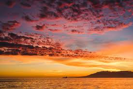

Welcome to my website! This is the homepage.
- Ta й таке
- Ta й таке
-
- Що ти тут робиш?
- Ta й таке
- Ta й таке
- Ta й таке
- Отакої
- Отакої
- Отакої
У неї є Oleg
Fortepiano

Вочевидь, зараз не всі пригадають цю серпневу дату – вісімнадцяте святкування Дня Незалежності України. Відлік десятилітньої історії Вишиванкового фестивалю розпочався саме тоді, коли сімдесят дев’ять людей, убраних у виши́ванки, утворили вздовж Потьомкінських сходів так званий «живий ланцюг». Амбітні плани організаторів повністю виправдалися: він сягнув-таки берега моря. Простягаючись білою ниткою від п’єдесталу пам’ятника Рішельє, ланцюг із року в рік ставав усе довшим, а разом із цим зростало й усвідомлення Одеси як українського міста. Зростало настільки, що в 2014 році, незважаючи на невпинну зливу, для участі в акції «Вишиванковий ланцюг» вишикувалася півторатисячна черга, утворивши нескінченне живе море виши́ванок.
Подальші два роки запам’яталися встановленням нових рекордів, адже́ кількість учасників збільшилася вдвічі. До речі, дюк де Рішельє також долучається до цієї події. Четвертий рік поспіль святковий гардероб герцога поповнюється найрізноманітнішими виши́ванками: блакитно-синій і яскраво-червоний, жовтогарячий і ніжно-зелений – ось палітра його ви́шитих візерунків.
Уже вдеся́те майорить Приморський бульвар синьо-жовтими барвами, і вже вкотре ми збираємось у самому серці Одеси, щоб помилуватися показом автентичного вбрання, написати диктант просто неба, концентруючи нашу енергію й демонструючи всім як свою єдність, так і свою любов до рідного міста та своєї країни.